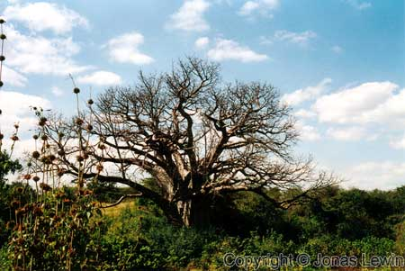
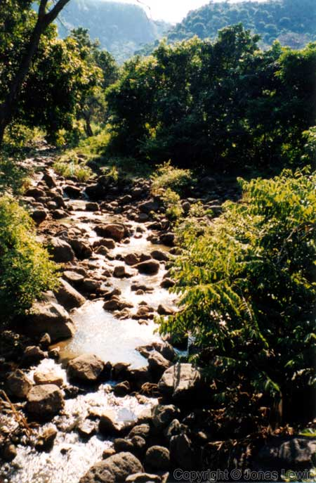
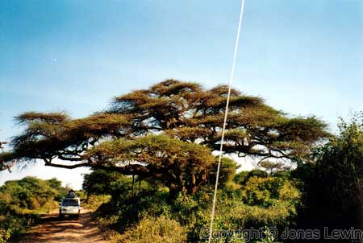
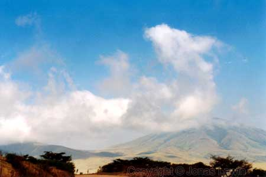
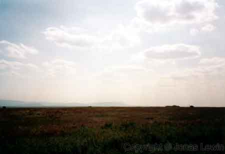

The Scenery.
|
  The acacia trees here can get very very large. As you see from the shadow, the car is actually just under it. If you look close, you see a person standing in the car, looking out the roof of the car.  It's really really far to the closest.... everything. |